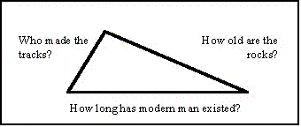
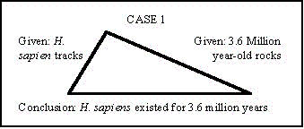
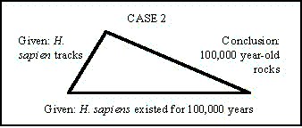
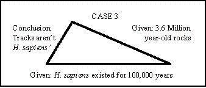

| Evolution in the News - February 1997 |
| by Do-While Jones |
It is tempting to talk about how damaging these discoveries are to the fable of human evolution, but we will have to save that for another issue. The theme this month focuses on the unreliability of dating techniques and the subjective methods that are used to evaluate the dates.
An excellent example of a dating problem in the news appears in an article in this month's issue of National Geographic magazine.1 It describes some footprints made in volcanic ash that are said to be 3.6 million years old. Please pay careful attention to what these two short paragraphs of that article say.
As I kneel beside the large print and lightly touch its sole, I am filled with quiet awe. It looks perfectly modern. "I thought that at three and a half million years ago their prints might be somehow different from ours," says Latimer. "But they aren't. The bipedal adaptation of those hominids was full-blown."
Anyone who has been to the zoo knows that ape feet look very different from human feet. Their curved feet tend to look like hands, with finger-like toes that can be used for grasping objects. The pictures on page 79 of this article clearly show how different chimpanzee feet are, and what their footprints look like.
Anyone who has been to the seashore knows what human footprints look like. These, and other footprints in supposedly ancient rocks, were unmistakably made by modern Homo sapiens. They are as unmistakable as Bruno Magli shoe prints. This is important evidence. How do people explain it?
You-know-who would say, "Modern humans never made such ugly ass footprints." Most evolutionists agree. They say the footprints weren't made by Homo sapiens despite the fact that they are "indistinguishable from those of modern humans.2" If the "footprints were not known to be so old, we would readily conclude that they were made by a member of our genus.3" They ignore the obvious evidence that these are human footprints and imagine that ape feet must have evolved into human feet millions of years before the rest of the ape evolved into a man. They make the totally unfounded assertion, quoted above, that, "The bipedal adaptation of those hominids was full-blown."
But there are two other possible explanations for these footprints. The second possible explanation is that the rocks really are 3.6 million years old, and the footprints really were made by Homo sapiens. This would mean that modern man must have lived 3.6 million years ago.
But suppose that the method for dating rocks is as unreliable as it has been clearly shown to be. Since 1986 lava from Mount St. Helens dates at 2.8 million years old, it is quite possible that the volcanic ash containing those footprints may be just a few thousand years ago, not 3.6 million years ago. Then one would have no trouble believing the third explanation, that the rocks are young and the footprints are modern.
We have here three pieces of evidence that must fit together like the three sides of a triangle. Given two sides of a triangle, and the angle between them, the third side is constrained to one particular length. Similarly, given two pieces of evidence, and the scientific reasoning that relates them, the third conclusion is constrained to just one possibility.
Let's look at this graphically. The three sides of the triangle are:
|
 |
 |
CASE 1: We are given that Homo sapiens made the tracks, and that the rocks are 3.6 million years old. The conclusion must be that Homo sapiens have lived for at least 3.6 million years. |
| CASE 2: We are given that Homo sapiens made the tracks, and Homo sapiens have lived for 100,000 years. The conclusion must be that the rocks are 100,000 years old or less. |  |
 |
CASE 3: We are given that Homo sapiens have lived for 100,000 years, and the rocks are 3.6 million years old. Then Homo sapiens could not have made the tracks. |
Ironically, the evidence is the strongest that the tracks were made by Homo sapiens. If these tracks had been found in ashes at Pompeii rather than Tanzania, there would have been no question that they were made by modern man. But because evolutionists choose to believe unreliable dating methods, and fictional time periods of existence of species based on those unreliable dating methods, they are forced to reject the strongest evidence and conclude the footprints weren't made by Homo sapiens.
Even though the footprints look "perfectly modern," evolutionists tell you they aren't. Who are you going to believe? The evolutionist or your lying eyes?
The evolutionist reaches his conclusion not on the strength of the evidence, but on the implication of the conclusion on the theory of evolution.
Two of the conclusions are unacceptable to the evolutionist for precisely the same reason. If Homo sapiens have been around for 3.6 million years, then they existed at the same time as Australopithecus afarensis, Australopithecus robustus and all the other extinct apes and extinct races of men. Similarly, if the rocks are just a few thousand years old, that means the fossils in them are just a few thousand years old, so the extinct apes and extinct races of men both lived until just recently.
Both of these conclusions are unacceptable to evolutionists because both prove that all the supposed human ancestors lived at the same time as their alleged descendants (either a long time ago, or recently). The theory of evolution demands that older, inferior species are replaced by newer, superior species by the process of natural selection, which drives the inferior species to extinction. If all these creatures lived at the same time, then they didn't evolve into each other.
The discovery of stone tools (presumably made by man) in rocks 2.5 million years old4 in Ethiopia and Homo erectus (ape-man) fossils found in 27,000 year-old rocks in Java mess up the evolutionists' chronology because both these discoveries would imply too much overlap for apes to have evolved into humans.
Of course, a scientist unprejudiced by the theory of evolution, who realizes the basic unreliability of radioactive dates, has a significant advantage over other scientists who have handicapped themselves this way. We can expect to see significant advances in scientific progress in the next few decades as more and more scientists reject the theory of evolution and don't try to make the data fit with an old, incorrect theory.
| Quick links to | |
|---|---|
| Science Against Evolution Home Page |
Back issues of Disclosure (our newsletter) |
| Web Site of the Month |
Topical Index |
Footnotes:
1
Gore, R. National Geographic, Feb. 1997, "The First Steps", pp 72-99.
(Ev)
2
Anderson, New Scientist 98:373, 1983.
(Ev)
3
Tuttle, Natural History, March 1990.
(Ev)
4
Associated Press, Jan 23, 1997